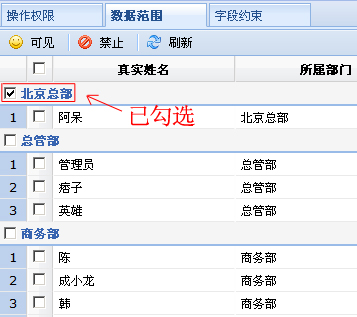
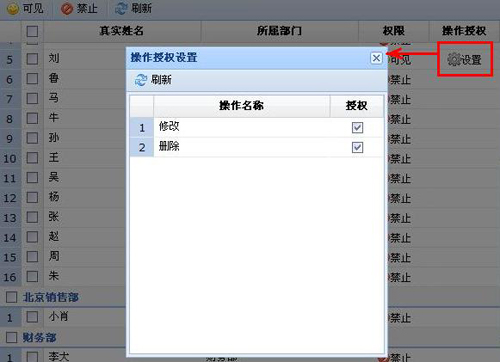
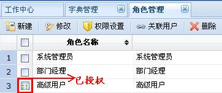

操作权限
操作权限的启用/禁用可约束角色用户是否能够使用该模块的各种操作功能，例如删除部门信息、修改部门信息等；如果拥有多重角色的用户登录后，系统会合并重复操作并取大，例如某用户同时拥有系统管理员和普通用户两种角色，系统管理员角色可对部门信息进行删除，但普通用户角色不能删除部门信息，这时该用户登录后，系统则认为是可以删除部门信息的。
数据范围
数据范围是指，用户可以查看到该模块哪些用户（除自己外）的数据；多重角色用户的数据范围也会合并显示。
字段约束
字段约束可以对某角色所填信息进行强制控制，如销售人员出差时只能申请不超过200元/晚的房间住宿；拥有多重角色的用户，系统会默认使用最后一个角色的字段约束进行控制。
权限设置技巧
在数据范围设置中，若勾选了部门信息，那么新建在该部门下的用户，将自动属于该角色的可见范围。

操作授权
操作授权是操作权限的功能补充。例如：操作权限中有查看权限，可以在列表中勾选信息查看，同时弊端有可能控件不到删除或其他操作，现在加入操作制授权，屏蔽列表中多选框有效控制所有操作。
1.设置授权； 
2.点击授权图标，查看授权的可操作项；

3.已授权操作；